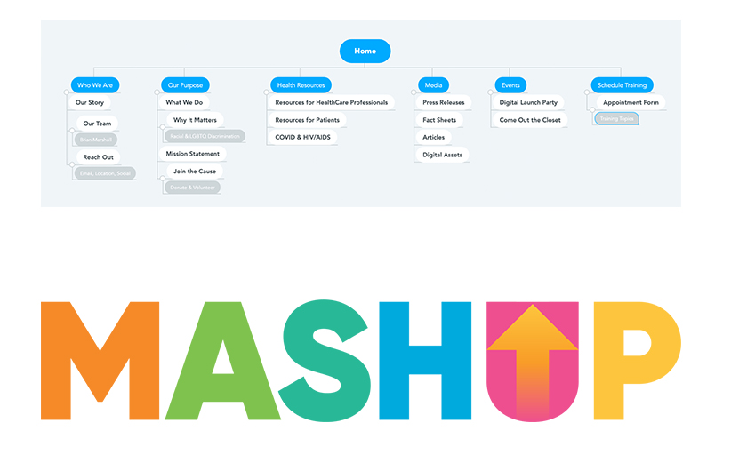

This project was designed for a client that needed a website that was not only informative, but also inviting. This site aims to showcase the importance of bridging the gap between healthcare professionals and LGBTQ men of color. As part of the web design team, we wanted to show our clients mission by helping to create a site that was easy to use, colorful and inviting, but full of information for healthcare workers and those seeking to get care as well. We went with colors that matched well with the logo and kept the website cohesive and on brand.

As part of the website design team, I created a mindmap highlighting pages that were important to building this site. Mindmapping this process helped to ensure that each page or element was placed into a spot that was organized and logically made the most sense. This map was used as a basic outline for the website that we continued tweaking while working until it made the most sense and worked best for our client. We used the Mashup logo, created by another team working on this project, for our color inpiration. Ultimately, choosing colors from the logo that seemed to work best for the purpose of the website.